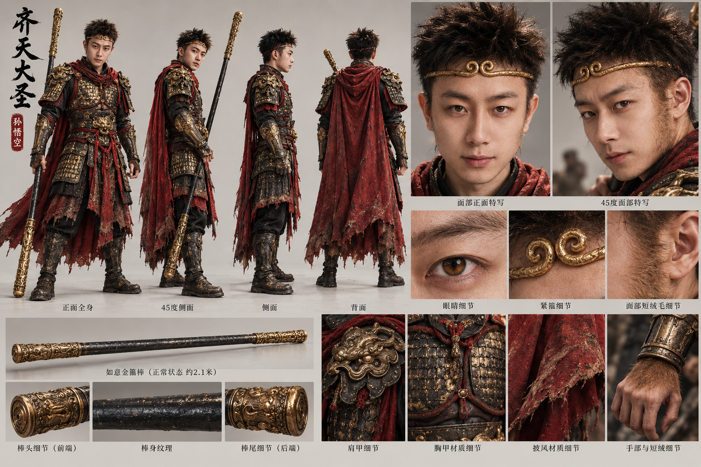
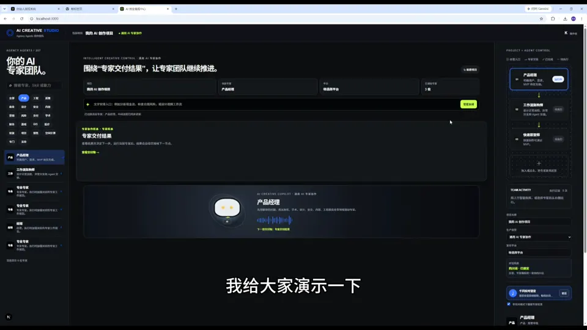

发愿不断创造价值，以道御术
独立创造者 / 成都
伍老师
AI 独立创造者
从真实问题出发，用 AI 把想法做成作品、产品与可用的工作流。
真实任务 → 判断问题 → 拆解流程 → 现场实践 → 检查成果
创作者宣言
You want to specialize in being you.
你真正应该专精的，是成为那个具有独特能力、经历和思考方式的自己
01 / 作品档案
作品，不止于画面。
从影像与角色视觉，到网站界面和工作流。每种成果用适合它的形式呈现。

01
真实问题
先弄清使用者要解决什么，以及现有资料和限制。
02
我的判断
选择合适载体和验证方式，明确需要人来确认的地方。
03
制作与检查
完成约定的作品、原型或流程，并核对交付边界。
03 / 方法
以道御术，持续实践。
工具会变化。真实任务、人的判断和成果检查，是我持续使用的工作顺序。
- 01真实任务
看清目标与使用场景
- 02判断问题
区分核心问题与表面要求
- 03拆解流程
确定输入、步骤与人工确认点
- 04现场实践
用真实材料制作样品
- 05检查成果
核对质量、可用性与交付形态
- 06复盘迭代
保留有效方法，说明局限
04 / 服务与合作
把合作方式说清楚。
先确定参与方式、范围和交付物，再根据具体需求评估报价。
01
AI 实战教学与成果陪跑
围绕真实任务讲解、演示、练习、检查与复盘。
02
AIGC 视觉与视频制作
从方向、脚本、角色和场景资产，到约定的视频或视觉交付。
03
网站、轻量产品与 Codex 辅助开发
需求拆解、界面原型和可运行功能验证。
04
Agent、知识库与自动化工作流
分析具体场景，设计人工确认节点，搭建并验证原型。
05
企业 AI 场景验证
围绕具体业务任务制作样品，复盘可行性。
05 / 真实交流
客户与学员反馈。
保留真实聊天截图，让合作与教学中的具体反馈有出处。


真实沟通截图，已做匿名处理；仅反映当时交流，不代表项目验收或商业效果。
06 / 关于伍老师
发愿不断
创造价值。
我是一名 AI 独立创造者，围绕真实问题做影像、网站、产品和工作流。我的实践涉及 AI 实战教学、课程研发、Codex 辅助开发、AIGC 视觉与视频，以及企业 AI 场景验证。
我会把判断、制作、检查和复盘放进同一条工作线，让作品与方法都能继续迭代。
了解更多 ↗